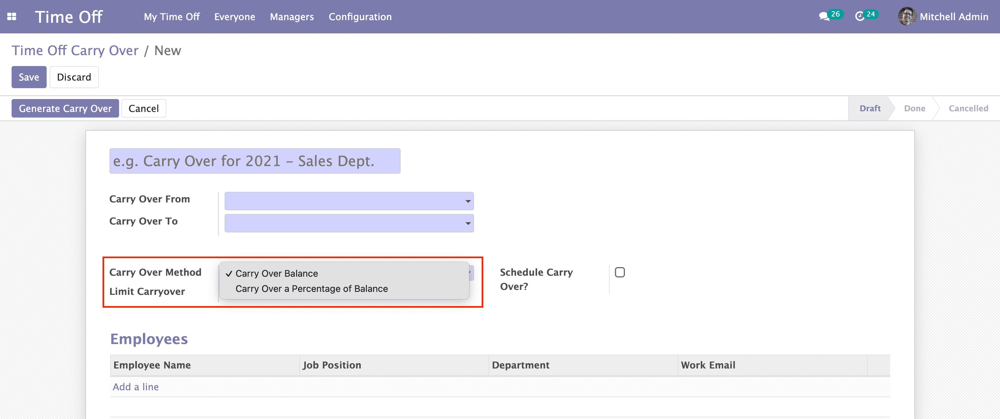
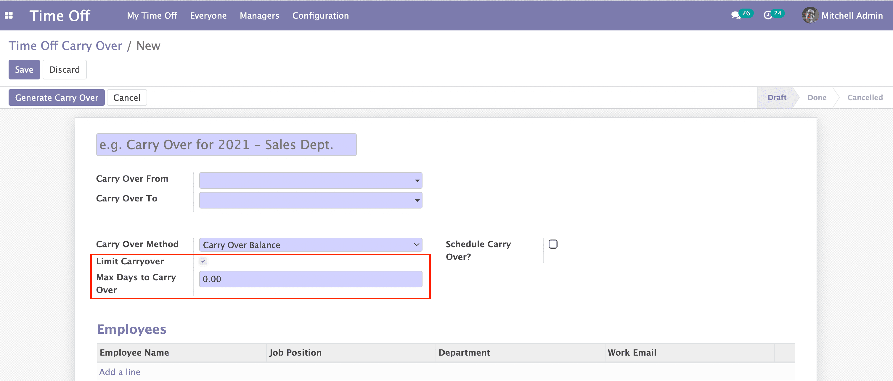
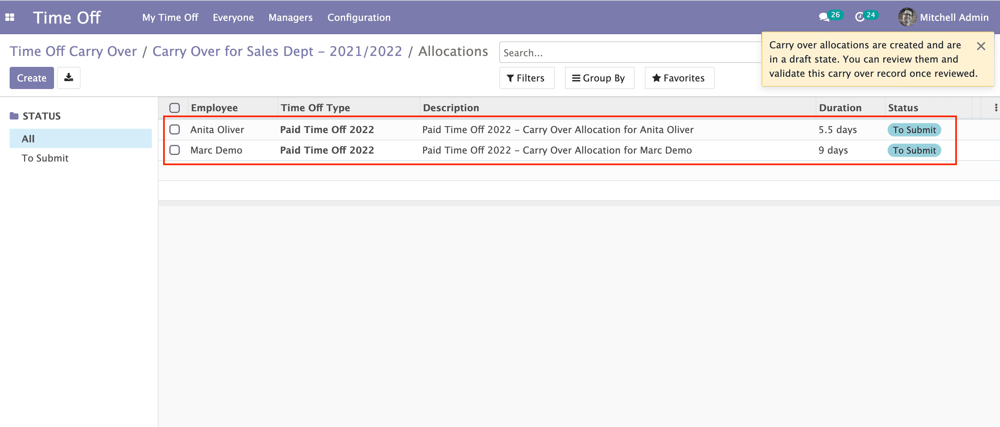

Features
Leave carry over methods
Specify whether you would like some or all of the balance days of an employee to be carried over, with two options: Carry Over Balance, or Carry Over a Percentage of Balance.

Define a limit on days to be carried forward
Define a maximum number of days to be carried forward. If the balance of an employee exceeds the defined limit, the app will only carry forward days equal to the defined limit.

Schedule your time off carry over
The app offers an option to schedule your carry over transactions. By defining the carry over rules and scheduling the carry over transaction, the system will create the carry over allocations on the scheduled date - while taking into account the balances of employees on the day the carry over is executed.

Review carry over allocations before validating results
You can test and experiment with the carry over allocations using the different options that the app offers, and changing them while you test. The app initially generates the carry allocations in a draft state and you can access and review them from within the carry over record. You can validate the allocations once you have reviewed the allocations. Cancelling a carry over record that is not in a completed stage will reset all allocation records and allows you to start over.

Support
Do you require support? Do you have queries and/or suggestions? Please feel free to reach me out at my email below and I'll make sure to get back to you: